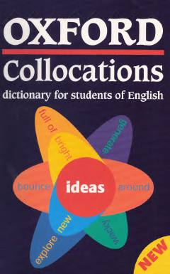

OCIngliz tilidagi so'z birikmalarini to'g'ri qo'llash uchun mo'ljallangan mukammal lug'at.
Ushbu lug'at ingliz tilini o'rganuvchilar uchun maxsus ishlab chiqilgan bo'lib, so'zlarning o'zaro birikish qoidalarini (kollokatsiyalarni) o'rgatadi. Kitobda so'zlarning tabiiy va to'g'ri qo'llanilishini ta'minlash uchun keng qamrovli misollar va foydalanish bo'yicha qo'llanmalar keltirilgan.